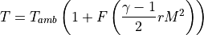
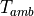
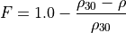

WSF_COMPOSITE_OPTICAL_SIGNATURE¶
- optical_signature WSF_COMPOSITE_OPTICAL_SIGNATURE¶
optical_signature <signature-name> WSF_COMPOSITE_OPTICAL_SIGNATURE state <state-name> | default ... Surface Commands state ... end_optical_signature
Overview¶
WSF_COMPOSITE_OPTICAL_SIGNATURE is an implementation of optical_signature that extends the standard optical signature model by also providing the infrared signature. The user defines one or more surfaces that roughly define the surface of the platform. Each surface has an aspect-dependent projected area and either a statically or dynamically defined temperature. The temperature of the surface is used to determine its radiant intensity using a blackbody model.
Note that results of this model assume the distance to the observer is large compared to size of the object represented by this signature (i.e.: far-field assumption).
Note
This model provides all of the signature components needed by the optical and visual detection modes WSF_EOIR_SENSOR and WSF_IRST_SENSOR, as well as the components needed by the visual detection of WSF_OPTICAL_SENSOR. In particular, this model also provides any signature that would otherwise be provided by infrared_signature and inherent_contrast. Any signature provided by those commands will be ignored if this model is used.
Future Development¶
This model represents a developmental capability. In particular:
The plume surface will automatically attach to the previous surface, but it has only been tested with cone, cylinder and hemisphere shapes.
The plume currently requires that the plume temperature, length and radius be explicitly specified. In the future these values may be determined at run-time based on the current conditions.
The yaw, pitch and roll commands are accepted and processed, but haven’t been tested thoroughly. Given the available shapes, most applications should not require orientation. If they are used, angles that are multiples of 90 degrees should be used, otherwise the automatic face adjacency checks may not work correctly.
Commands¶
- state [ <state-name> | default ]¶
Indicates that the following table definition will be used when the platform is in the signature state <state-name>. If default is specified then the subsequent table will be used if the platform is in a signature state that does not match any of the states defined in the signature.
If a state command is not specified, then the signature has one state that applies to all signature states.
Surface Commands¶
These commands provide a means to define simple three-dimensional shapes that approximate the surface of the platform. The actual dimensions of a surface are not important, but rather the area of the faces and their normal vector. This is important when aggregating surfaces, as discussed next.
Common Surface Commands¶
All surfaces share the following commands:
- location <x-size> <y-size> <z-size> <length-units>¶
Specify the location of the origin of the surface with respect to the origin of the entity coordinate system. The location of a surface is not important except to ensure that adjacent faces of surfaces are correctly detected. Other than excluding adjacent faces, the projected area of each surface is computed independently.
Default: If a location is not specified, the location will be such that the surface being defined will directly abut to the most aft location the previous surface.
Note
This command is not necessary for most applications (aircraft, missiles, rockets). The automatic placement should be sufficient.
- temperature <temperature-value>¶
- temperature <table-value>¶
- temperature ambient¶
- temperature adiabatic_wall¶
Specifies the inherent temperature of the surface used in computing the temperature to be used for the blackbody model. This represents the temperature that is a result of self-production (engines, heaters, etc.) or skin friction. It does NOT include the temperature due to warming by the Sun.
The first form specifies a constant temperature.
The second form defines the temperature in terms of a tables whose independent variables may be one or more of altitude, speed or mach.
ambient indicates the temperature is the ambient temperature plus the the value of temperature_offset.
adiabatic_wall indicates the temperature will be computed using the adiabatic wall assumption.
Default: None. Must be specified.
- temperature_offset <temperature-value>¶
Specify a temperature offset to be added to the ambient temperature when ‘temperature ambient’ is specified. This value may be specified as a negative value.
Default: 0.0 k
- recovery_factor ( 0 .. 1 ]¶
Specify the recovery factor for the adiabatic wall temperature model (described below).
Default: 0.85
- gamma <real-value>¶
Specify the ratio of specific heats for the adiabatic wall temperature model (described below).
Default: 1.4
Adiabatic Wall Temperature Model¶
If the temperature command specifies adiabatic_wall, the temperature used for the blackbody model will be determined using an adiabatic wall assumption. The temperature to be used will be computed as follows:

Where:

The ambient (static) temperature at the current altitude
The current Mach number
The value of gamma
The value of recovery_factor
The adiabatic correction factor discussed below.


The adiabatic correction factor attempts to account for the fact that the adiabatic wall model doesn’t work well at high altitudes (it leads to high temperatures at high Mach numbers, even when the atmospheric density is near zero). For altitudes less than 30 km it has the value of 1.0. For altitudes greater than 30km it is computed as follows:

Where:
The density of the atmosphere at 30 km.
The density of the atmosphere at the current altitude

This expression approaches zero as the density decreases.
Orientable Surface Commands¶
Most surfaces (with the exception of the ‘sphere’ and ‘tabular’) can be oriented. Each surface has its own coordinate system that exactly parallels the part coordinate system (PCS). The dimensions or area of surface are initially defined in the PCS frame and the orientation commands specify the orientation of the surface.
- yaw <angle-value>¶
Specifies the yaw angle of the surface with respect to the entity to which it is attached.
Default: 0.0 degrees
- pitch <angle-value>¶
Specifies the pitch of the surface with respect to the entity to which it is attached.
Default: 0.0 degrees
- roll <angle-value>¶
Specifies the roll of the surface with respect to the entity to which it is attached.
Default: 0.0 degrees
Box Shape¶
surface box size ... ... Orientable Surface Commands ... ... Common Surface Commands ... end_surface
A ‘box’ shape is a short-cut for defining the six faces that define a box.
The location command specifies the centroid of the box.
- size <length-value> <length-value> <length-value>¶
Defines the size of a box. The first value is the dimension along the part coordinate system (PCS) X axis, the second is the dimension along the PCS Y axis, and the third is the dimension along the PCS Z axis. One of the dimensions may be zero. This is provided so that two-sided objects like solar panels or SAR antennas may be defined.
Default: 1 meter (each direction)
Cone Shape¶
surface cone length ... radius ... ... Orientable Surface Commands ... ... Common Surface Commands ... end_surface
A ‘cone’ shape may be used to define the sharp (or streamlined) nose of a platform. The axis of the cone is along the part coordinate system (PCS) X axis. The base of the cone is in the PCS Y-Z plane.
The location command specifies the center of the circle that defines the base.
- length <length-value>¶
Defines the length of the cone.
Default: Must be provided
- radius <length-value>¶
Defines the radius of the base of the cone.
Default: Must be provided
Cylinder Shape¶
surface cylinder length ... radius ... ... Orientable Surface Commands ... ... Common Surface Commands ... end_surface
A ‘cylinder’ shape may be used to define the body of a platform. The axis of the cylinder is along the part coordinate system (PCS) X axis. The caps of the cylinder are in the PCS Y-Z plane.
The location command specifies the centroid of the cylinder.
- length <length-value>¶
Defines the length of the cylinder.
Default: Must be provided
- radius <length-value>¶
Defines the radius of the cylinder.
Default: Must be provided
Hemisphere Shape¶
surface hemisphere radius ... ... Orientable Surface Commands ... ... Common Surface Commands ... end_surface
A ‘hemisphere’ shape may be used to define the nose of a blunt body. The axis of the hemisphere is along the part coordinate system (PCS) X axis. The base of the hemisphere is in the PCS Y-Z plane.
The location command specifies the center of the circle that defines the base.
- radius <length-value>¶
Defines the radius of the hemisphere.
Default: Must be provided
Plume Shape¶
surface plume length ... radius ... ... Common Surface Commands ... end_surface
A ‘plume’ shape represents the plume of a rocket or jet engine. This shape provides the approximate plume dimensions and temperature based on current operating conditions. The plume is assumed to be aligned with the part coordinate system (PCS) X axis.
The location command is invalid for a plume. The plume always attaches itself to the immediately preceding surface. It is also it not an orientable surface (yaw, pitch and roll are not valid command).
- length <length-value>¶
Explicitly defines the length of the plume.
Default: Not specified, which indicates the length will be determined from the current conditions. If it is provided then radius must also be specified.
Note
In the current version this must be specified. Automatic sizing is not yet implemented.
- radius <length-value>¶
Explicitly defines the radius of the plume.
Default: Not specified, which indicates the radius will be determined from the current conditions. If it is provided then length must also be specified.
Note
In the current version this must be specified. Automatic sizing is not yet implemented.
Spherical Shape¶
surface sphere radius ... ... Common Surface Commands ... end_surface
This defines a simple spherical shape.
The location command specifies the centroid of the sphere. It is also it not an orientable surface (yaw, pitch and roll are not valid command).
- radius <length-value>¶
Defines the radius of the sphere.
Default: Must be provided
Tabular Shape¶
surface tabular projected_area ... ... Common Surface Commands ... end_surface
A ‘tabular’ shape is one whose projected area is a defined by a table that is a function of the azimuth and elevation to the viewer. This shape typically occurs by itself. It is typically used to incorporate an existing table used to define an standard optical signature. By simply adding a temperature definition to this shape one can have an infrared signature.
The location command is not valid for this shape. It is also it not an orientable surface (yaw, pitch and roll are not valid command).
- projected_area Azimuth-elevation_Table_Definition¶
Specifies an azimuth-elevation table definition.
Default: Must be provided